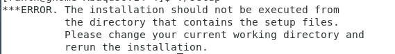

前期准备
- 下载安装文件压缩包与 License 文件，Abaqus6.14-4.zip 后解压
- 创建安装目录备用
mkdir -p /opt/Abaqus/{exe,tmp,license,workspace,test_case}
安装 License 服务
- 记录下当前主机
hostname，修改ABAQUS.lic第一行SERVER后ID前的主机名字段 - 将
ABAQUS.lic文件移动到Abaqus/license：mv ABAQUS.lic /opt/Abaqus/license/ - 进到 License 服务安装目录
cd Abaqus6.14-4/lnx86_64/license/UNIX/Disk1/InstData/NoVM执行 chmod +x install.bin && ./install.bin启动license安装界面- 填写当前主机的
hostname点击next - 勾选
NO SIMULIA License Server exists on this system - 勾选
Just install the licensing utilities

- 安装路径填写
/opt/Abaqus/license点击next等待安装完成 - 进到安装路径下执行：
./lmgrd -c /opt/Abaqus/license/ABAQUS.lic
当输出（lmgrd）ABAQUSIM using TCP-port xxxxx则可以开始进行 ABAQUS 主程序的安装
安装 ABAQUS 主程序
需要在安装包文件的上一层目录执行命令进行安装否则会提示报错：

当前 setup的路径为/opt/Abaqus6.14-4/lnx86_64/setup,则终端进入到/opt路径执行：
设置可执行权限：
chmod +x Abaqus6.14-4/lnx86_64/setup
chmod +x Abaqus6.14-4/lnx86_64/product/UNIX/Disk1/InstData/NoVM/install.bin
执行 Abaqus6.14-4/lnx86_64/setup 进入安装界面
Scratch directory设置为路径/opt/Abaqus/tmp点击next- 到
Installtian type时选择Abaqus product,接下来license server填27011@localhost
- 下一步填
@server1 - 到
Installtian directory时指定安装路径为/opt/Abaqus/exe

- 剩下的步骤一路点击
next保持默认即可，等待安装完成 - 设置 license 环境变量
export LM_LICENSE_FILE=27011@gnome - 上传 test.inp 文件进行命令行求解的测试
/opt/Abaqus/exe/Commands/abaqus job=test int